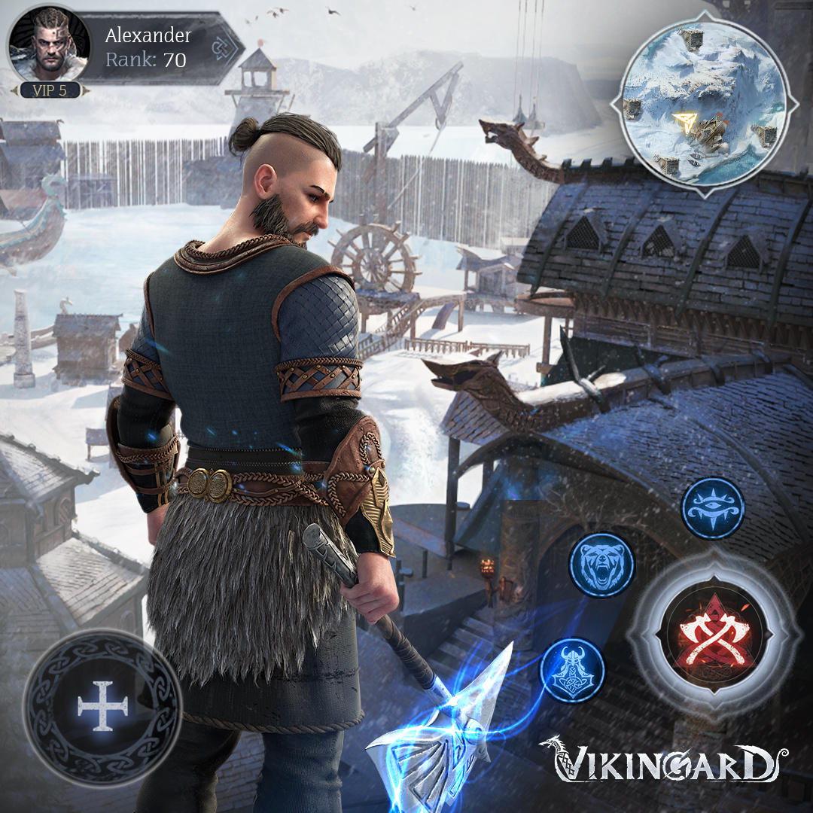
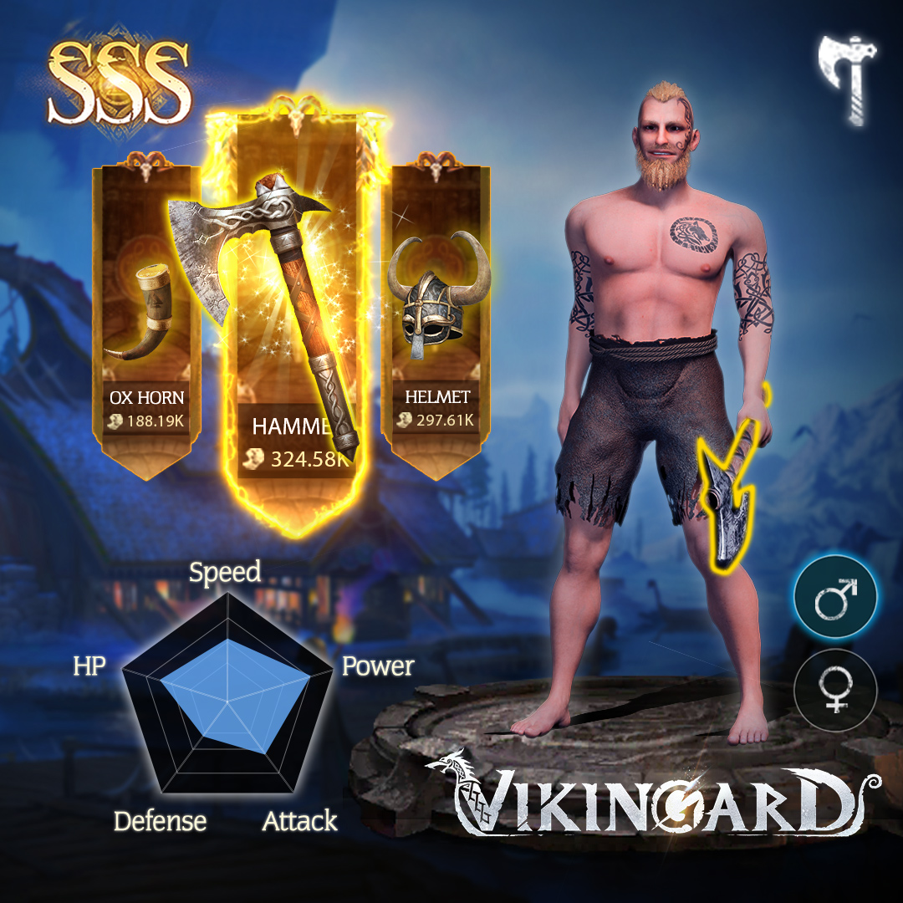
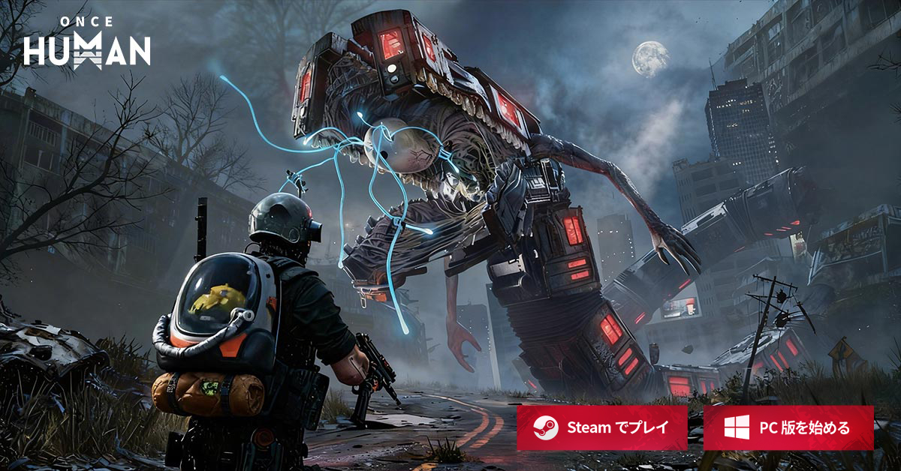
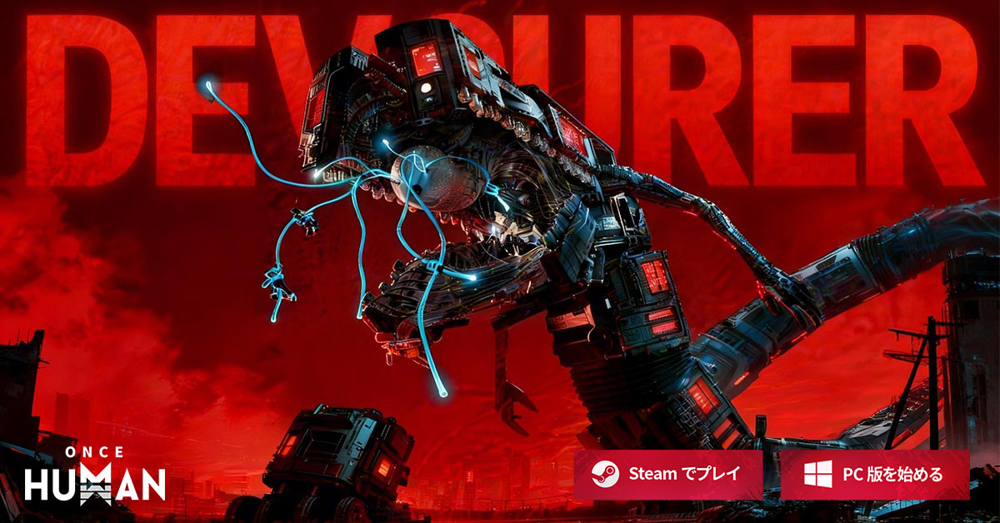
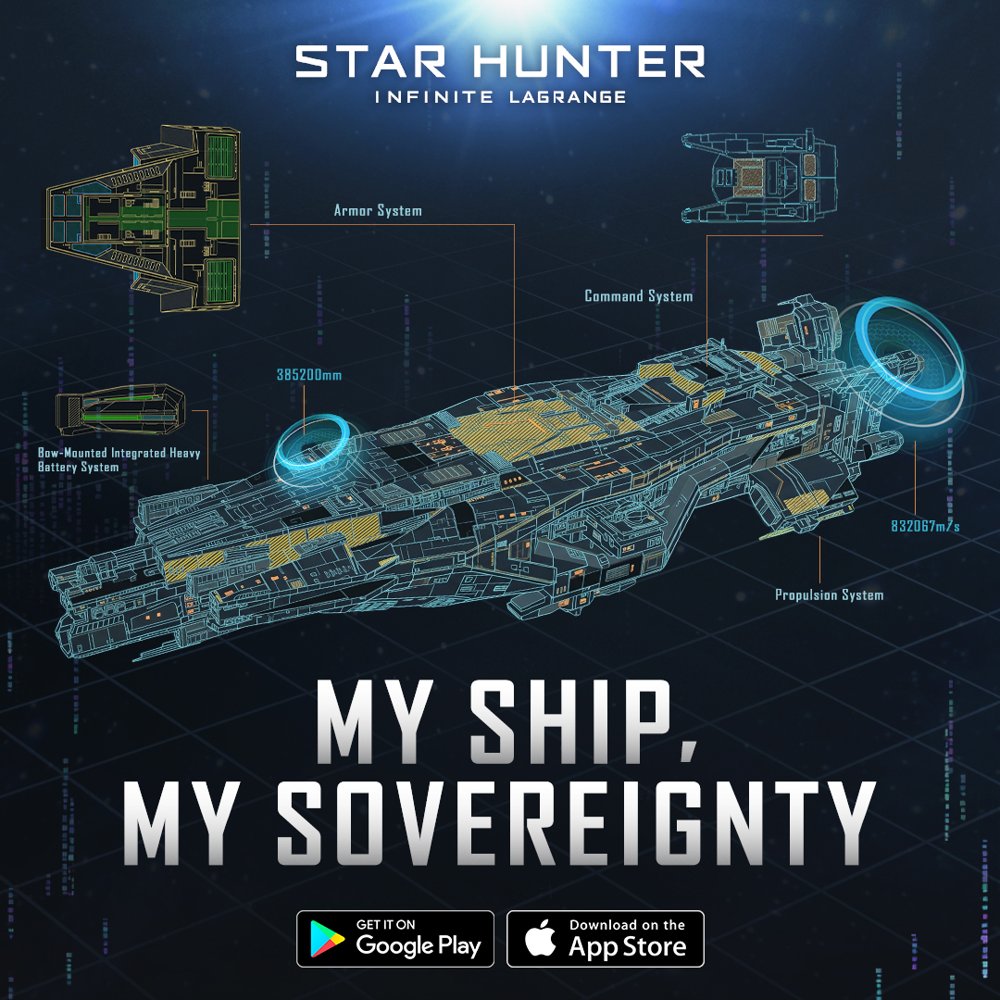
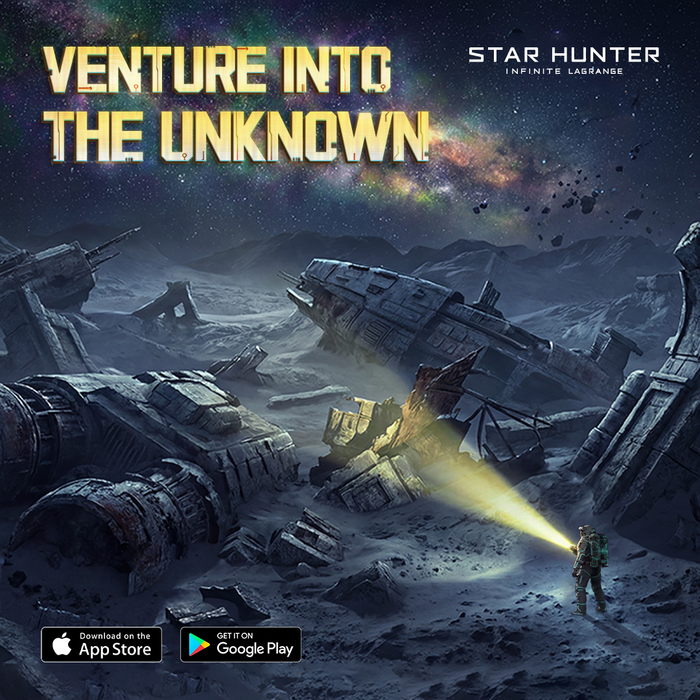
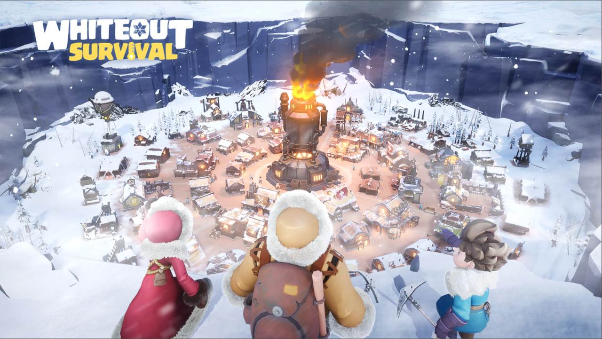
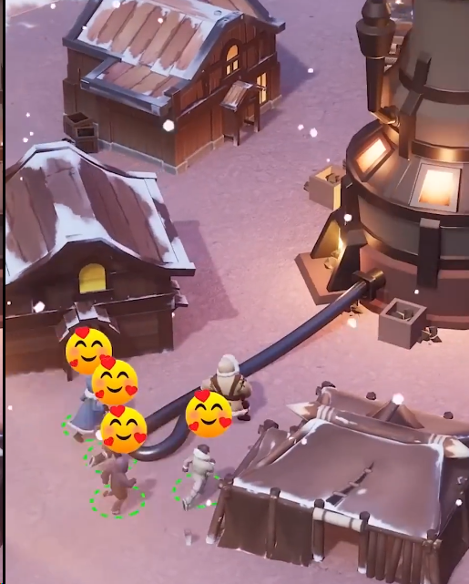
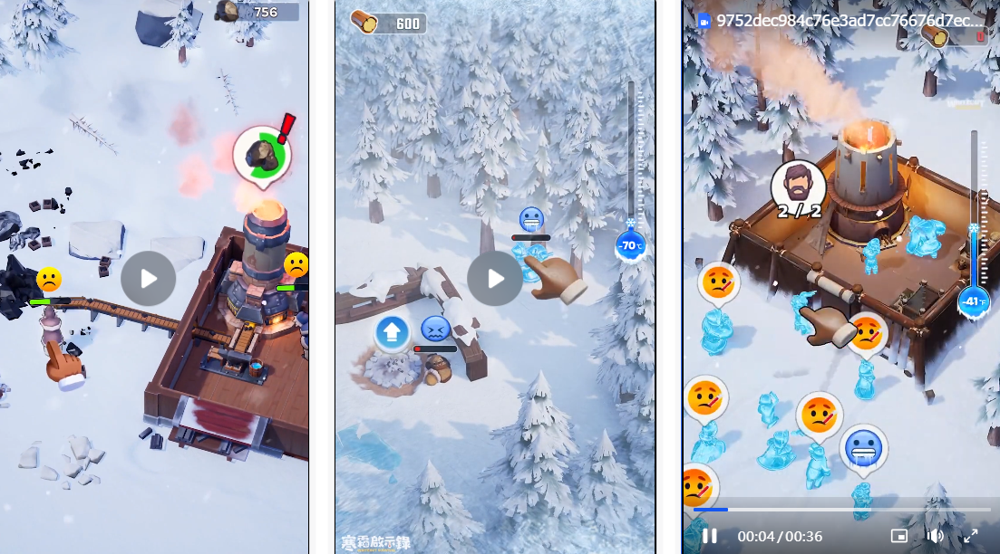
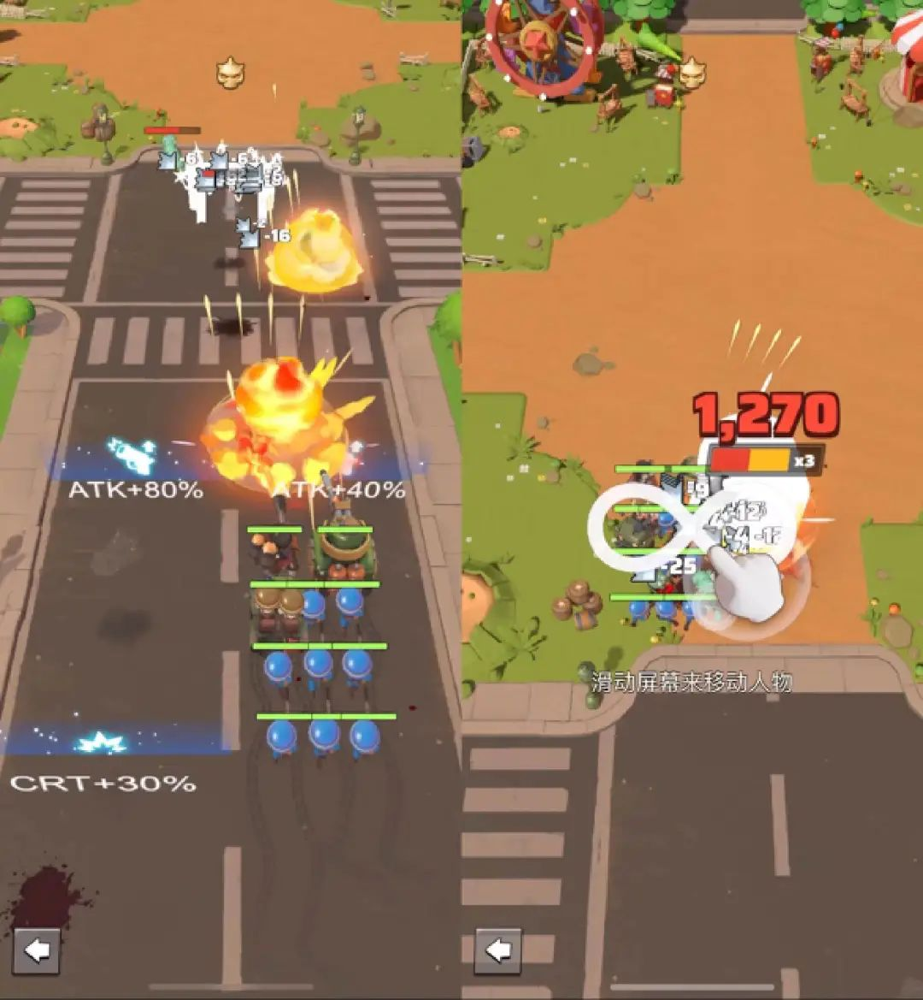

职业概述
8 年游戏广告创意经验，参与发行 20+ 款游戏项目。擅长 UA 创意素材策划执行、 项目管理统筹、创意体系搭建、数据驱动优化、竞品市场分析、外包供应商管理指导及 AI 工作流应用。
Resume
8 年游戏广告创意经验，参与发行 20+ 款游戏项目。擅长 UA 创意素材策划执行、 项目管理统筹、创意体系搭建、数据驱动优化、竞品市场分析、外包供应商管理指导及 AI 工作流应用。
负责 UA 创意素材（引擎、包装混剪、真人、平面）的策划执行、项目管理统筹、创意体系搭建、数据驱动优化、竞品市场分析、外包供应商管理指导及 AI 工作流应用。
负责多款海外游戏平面及视频广告制作，覆盖 RPG、SLG、卡牌、传奇与女性向题材，积累多品类买量素材生产经验。
负责多个国内手游投放广告图、出包物料等平面制作。
广东财经大学 / 信息学院 / 软件工程，2014.09 - 2018.06。大学英语六级，BEC 中级。
Featured Projects
选取代表性项目呈现创意判断、素材推进与结果沉淀，重点保留作品本身和背后的思考过程。
01 / SUCCESS CASE
独立主导引擎素材方向的创意规划与推进，结合日本地区渠道数据、竞品趋势和游戏内容卖点判断素材机会， 将创意判断转化为可执行的视频脚本与画面方案。 重点体现引擎素材在安装效率和持续拓展上的价值，以及个人在创意方向判断、素材落地和迭代优化中的贡献。
Creative Thinking
每个方向选取代表作品作为入口，重点展示“洞察来源 - 创意方案”的推导逻辑。
通过明确冲突和意外结局制造停留，让用户快速理解角色关系与游戏情境。
提取角色动作和射击高光，用多机位、多角色切换与强节奏剪辑放大视觉爽感。
借鉴跑酷射击结构，把低理解成本、升级反馈和失败结尾迁移到游戏枪械与场景中。
组合躲藏叙事、校园场景、日本元素和经典 BGM，形成更贴近日区用户的视频语境。
结合浴缸、温泉、炸弹反馈和角色造型，把高停留元素转化成日式轻剧情。
把伪实况解说改写成本地台词和 emoji 包装，并用 AI 动作快速响应热点。
High-performing Works
以卡片形式逐条展示数据表现突出的代表素材，呈现创意判断与投放结果之间的对应关系。
GG 渠道全年安装第一。基于当期热点舞蹈与联动内录素材的优秀表现，推进为更具镜头表现力的引擎素材。
马男与斗篷女队友在草丛中埋伏观察敌人，女队友抓住时机直接冲出，马男却慢半拍愣在原地，反被自己的炸弹炸倒。
从西部牛仔皮肤内录素材的优秀表现出发，将角色装扮、悬赏通缉令和剧情反转组合成更具题材辨识度的脚本。
从竞品真人头部素材获得启发，用第一人称视角串联摇晃、跳跃和多场景切换，突出游戏的自由度与动作节奏。
TT 渠道全年安装第一。将 KOL 原片剧情重新剪辑，并把关键画面替换为真实游戏内录，在保留原片趣味的同时增强游戏代入感。
02 / CREATIVE CASE
负责射击品类素材方向的创意拆解与脚本包装，将 FPS 爽感、版本卖点、UGC 原生内容和真人/KOL 表达转化为不同市场可测试的视频方案。 重点体现在多地区内容适配、素材结构复刻和创意表达拓展中的判断与执行。
Creative Thinking
重点呈现“从素材类型到创意方案”的拆解过程，以及不同表达方式在射击品类中的适配价值。
提取视角、节奏和反应点，再用角色皮肤、枪械特写与 UI 包装完成二创。
围绕夺金、万圣节和僵尸玩法，提炼奖励、限定皮肤、节日地图与冲突点。
快速剪辑地图、枪皮、动作和技能选择，用大字标题强调品质与操作手感。
在故事、上帝视角或失败反转中加入 meme 表情和 UI 包装，让泛用户更易理解。
结合内录片段、真人反应、多机位口播和 KOL 直播加工，延长素材生命周期。
03 / ASSET CASE
围绕维京题材的世界观、角色成长和玩法体验进行创意转译，将 SLG / 养成项目中较复杂的卖点包装成更直观、可观看、可理解的视频内容。 重点体现在题材素材资产的沉淀，以及将高表现母题延展为混剪、前贴、插片和本地化内容的复用价值。
Creative Thinking
围绕已落地素材，展示“题材卖点 - 表达方式 - 可复用价值”的关系。
从部落欢迎、投斧狩猎、野外行动到宴饮和码头出航，把维京世界做成可连续体验的日常任务。
用血条、摇杆、技能键和任务提示包装选武器、探索与野猪首领战，让用户直接理解玩法入口。
以“一把斧”切入砍树、开地、农田和村落扩张，用更明亮、轻量、风格化的俯视画面包装维京开荒。
通过洛哥带萌娃近战训练、射箭和远征，把维京题材转成角色培养与成长陪伴。
将英灵殿联动内容转化为调查事件，用线索、地点和判断过程增强剧情观看动力。
一张强调角色背影、技能按钮和地图探索，另一张用装备选择、属性雷达和性别切换包装角色养成。


Recent Projects
近期项目以素材方向与作品样例为主，集中呈现近期参与项目中的视觉表达与内容尝试。
集中呈现近期参与项目中的素材探索，侧重画面方向、内容节奏与不同题材下的广告表达尝试。




从英雄辨识度、阵容组合、技能高光与 IP 情绪价值切入，尝试将角色魅力转化为更适合广告传播的视觉记忆点。
围绕未知世界探索、场景氛围和角色行动建立素材切入点，用更强的情境感承接用户对世界观与事件的好奇。
Project Archive
不同品类与阶段的项目经验，呈现在剧情包装、角色卖点、社交内容和早期广告设计中的素材处理方式。
围绕经典 JRPG 氛围、角色羁绊、剧情反转与抽卡期待，拆分适合短视频首帧、剧情钩子和商店图表达的素材方向。
围绕经典角色、社交组队、门派养成与节日活动，整理兼顾情怀触达和新用户理解成本的广告素材方向。
针对韩国市场偏好，拆分角色外观、幻想世界观、职业战斗和社交氛围等卖点，形成更本地化的视频与视觉表达。
曾参与《MU 跨时代》《斗罗大陆》《头号避难所》《江山美人》《日理万姬》等项目广告设计，覆盖仙侠、传奇、SLG、卡牌与女性向题材，积累了多品类买量素材生产经验。
Selected Works
这里展示从后台整理出来的广告素材、项目复盘和个人输出。正式上线后会由后台内容自动更新。
Beyond Work
记录工作之外的创意方法探索，包括 AI 工具辅助拆解、脚本生成、视觉测试，以及海外竞品产品与素材观察。
核心是先判断方向，再用 AI 提高拆解、扩展和验证效率。
先收集高表现素材、竞品案例、版本内容和市场热点，再用 Gemini / 豆包辅助分析视频、图片和首帧信息。
AI 辅助拆解 Hook、画面结构和素材亮点，个人结合投放数据、市场数据、游戏卖点和成本筛选可推进方向。
用 ChatGPT / 豆包 / DeepSeek 为每个方向扩展 1-2 个脚本方案，再筛选更有测试价值的版本。
补充角色人设、版本信息和镜头节奏，让 AI 输出约 30s 的详细分镜、字幕、旁白和提示词。
常规素材进入制作团队/供应商流程；快速验证方向用 Seedance 2.0 输出 AI 视频测试素材，用即梦生成图片参考。
使用即梦生成的视频测试片段，用于验证角色设定、怪物压迫感和动作场景方向。
Gemini / ChatGPT / 豆包 / DeepSeek / Seedance 2.0 / 即梦
沉淀方向来源、核心洞察、卖点、成本、优先级和筛选后的脚本方案。
基于《Whiteout Survival》与《Last War: Survival Game》的产品、买量素材和视觉表达拆解， 将竞品观察转化为后续广告创意可复用的题材判断、情绪路径与玩法包装参考。
先看题材差异、核心玩法和买量优势，判断产品最容易被海外用户理解的第一印象。
拆解 low-poly 卡通、低饱和色彩、冷暖对比和角色造型，提炼能形成记忆点的画面语言。
从生存压力、资源匮乏、孤立无援切入，再用救援、建设和成长反馈完成先抑后扬。
沉淀首帧 Hook、玩法反馈、失败结尾、真人解说等结构，作为后续创意测试的参考库。



